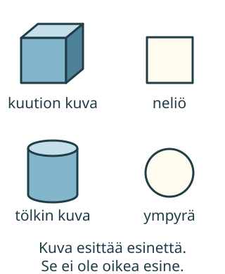

<link rel="stylesheet" href="lesson.css" />


<section data-teaching-step="1" data-lesson-role="teaching-step">
<section class="lesson-intro"><h2>Esine ja sen kuva</h2><p>Aava nostaa palikan pöydältä. Voiko hän nostaa paperille piirretyn kuvion samalla tavalla?</p><p><strong>Tutkin oikeaa esinettä ja siitä tehtyä kuvaa.</strong></p></section>
</section>


<section>
<section data-teaching-step="2" data-lesson-role="teaching-step">
<h2>Kokeile ensin käsin</h2><p>Ota palikka ja paperi. Palikka vie tilaa. Sitä voi katsoa edestä, takaa ja sivuilta. Se on <strong>kappale</strong>.</p><p>Piirrä paperille palikan pohjan ääriviiva. Piirros esittää litteää <strong>tasokuviota</strong>. Sillä on pituutta ja leveyttä. Kuvion paksuutta ei tutkita.</p><figure data-geo-figure data-lesson-role="worked-example"><figcaption>Ruudulla on kuvia esineistä ja kuvioista. Kuvan varjostus auttaa kuvaamaan tilaa. Se ei tee kuvasta oikeaa kappaletta.</figcaption></figure>
</section>


<section data-teaching-step="3" data-lesson-role="teaching-step">
<h3>Esimerkki: palikasta jälki</h3><p>Kuution muotoisen palikan tasainen pohja on neliön muotoinen. Kun piirrät pohjan ympäri ja nostat palikan, paperille jää neliön ääriviiva. Kappale ja kuvio ovat eri asioita.</p>
</section>


<section data-teaching-step="4" data-lesson-role="teaching-step">
<h3>Uusi tilanne: tölkin pohja</h3><p>Myös tölkki vie tilaa. Sen tasaisen, pyöreän pohjan ympäri piirtämällä saat ympyrän. Tölkin kylki on kaareva. Kaikki kappaleen pinnat eivät siis ole tasaisia.</p>
</section>


<section data-teaching-step="5" data-lesson-role="teaching-step">
<h3>Varo kuvan ansaa</h3><p>Pallon kuva voi näyttää pyöreältä ja varjostetulta. Se on silti kuva. Oikeaa palloa voi tunnustella joka puolelta. Myös paperi on oikea, hyvin ohut kappale. Paperille piirretty ympyrä esittää tasokuviota.</p>
</section>
</section>


<section data-geo-work>
<section data-teaching-step="6" data-lesson-role="teaching-step">
<h2>Tutki jäljen syntyä</h2><p data-lesson-role="question">Ennusta: millainen jälki jää kuution pohjasta? Entä tölkin pohjasta? Valitse malli ja etene vaihe kerrallaan.</p>
</section>

<section data-teaching-step="7" data-lesson-role="teaching-step">
<p><button type="button" data-geo-model="cube">Kuution malli</button> <button type="button" data-geo-model="can">Tölkin malli</button></p><div data-geo-scene></div><p data-geo-caption aria-live="polite"></p><p><button type="button" data-geo-step>Seuraava vaihe</button> <button type="button" data-geo-start>Takaisin alkuun</button></p><details data-lesson-role="hint"><summary>Apua</summary><p>Seuraa vain pohjaa, joka koskettaa paperia. Älä piirrä koko esineen kuvaa. Voit kokeilla samaa aikuisen kanssa oikealla palikalla.</p></details>
</section>


<section data-teaching-step="8" data-lesson-role="teaching-step">
<h3>Pieni harjoitus</h3><p data-geo-question></p><p><button type="button" data-geo-answer="object">Oikea esine</button> <button type="button" data-geo-answer="drawing">Piirros</button></p><p data-geo-feedback role="status" aria-live="polite">Valitse, puhuuko tehtävä oikeasta esineestä vai piirroksesta.</p><p><button type="button" data-geo-next>Toinen tilanne</button></p>
</section>
</section>


<section data-teaching-step="9" data-lesson-role="teaching-step">
<details data-lesson-role="teaching-step"><summary>Lisätutkimus</summary><p>Katso samaa palikkaa edestä ja ylhäältä. Piirrä molemmat näkymät. Piirrokset voivat näyttää erilaisilta, vaikka esine ei vaihdu.</p></details>
</section>


<details class="teacher" data-lesson-role="teacher-note"><summary>Opettajalle: käsin tutkiminen ja rajat</summary><p>Vuosiluokat 1–2, avaruudellisen hahmottamisen aloitus. Nimeä kuutio ja ympyrä tarvittaessa itse; muotojen nimiluettelon osaamista ei vaadita. Käytä ehjää palikkaa ja suljettua, sileäreunaista lieriömäistä esinettä. Lapsi tunnustelee ja kääntää niitä. Piirtäkää pohjan ympäri aikuisen avulla.</p><p>Ruutumalli näyttää valitun pohjan ja sen ääriviivan. Se ei ole 3D-esine eikä fyysinen tutkimus. Tölkin kuva on yksinkertaistettu lieriö, kuutio on ihannemalli. Hiekkapainalluksesta ei väitetä aina syntyvän täsmällistä kuviota; pallon jälki riippuu alustasta ja painalluksesta. Kappaleiden tunnistamista ei päätellä pelkästä varjostuksesta tai käteen sopimisesta: myös suuri talo on kappale.</p><p>Harjoitus tarkistaa annettujen tilanteiden erottelua. Se ei todenna fyysistä tunnustelua, piirtämistaitoa tai pysyvää avaruudellista osaamista. Lukutukea voi antaa. Havainnot eivät tallennu.</p></details>


<section data-teaching-step="10" data-lesson-role="teaching-step">
<section><h2>Lopuksi</h2><p>Näytä oikea esine ja siitä tehty piirros. Mikä ero niillä on? Voit vastata näyttämällä ja kokeilemalla.</p></section>
</section>


